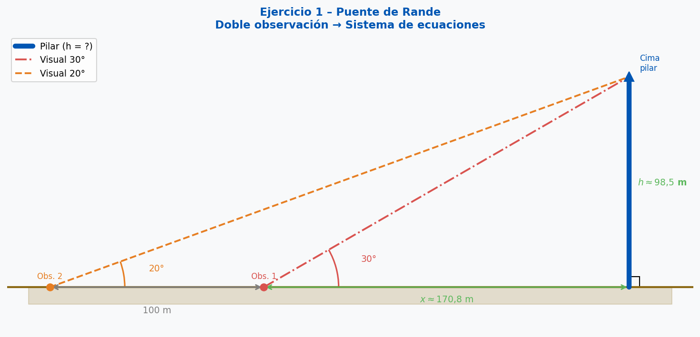
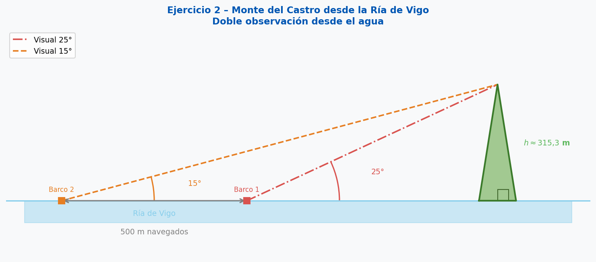
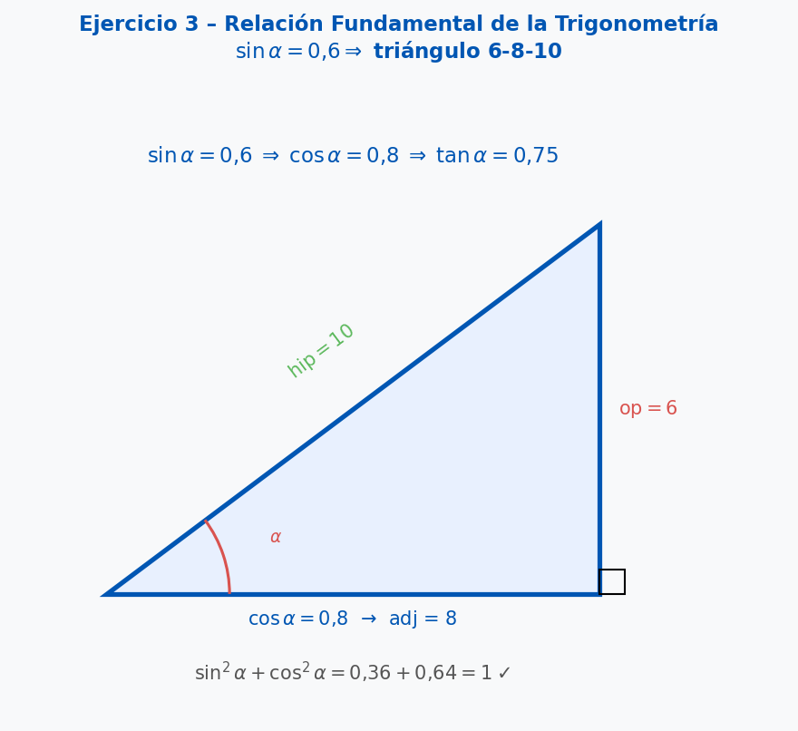
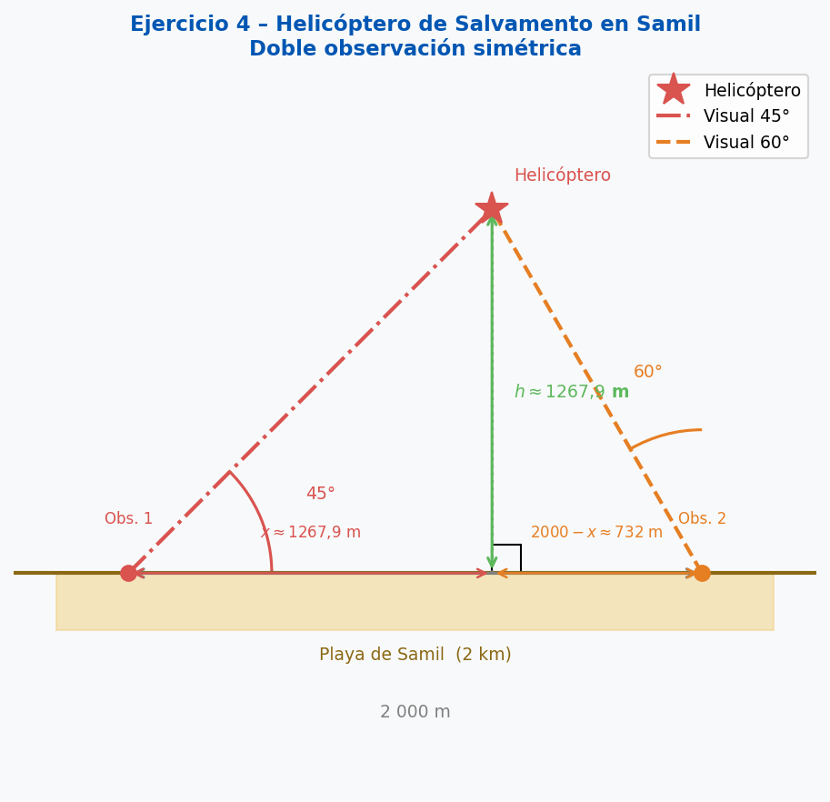

CE 2.1: Formular conjeturas y explorar estrategias para resolver problemas complejos.
CE 4.2: Representar conceptos matemáticos de forma gráfica y algebraica.
Cuando un objeto es inaccesible (no podemos llegar hasta su base), se realizan dos medidas de ángulo desde dos puntos distintos a distancia conocida. Esto genera un sistema de dos ecuaciones con dos incógnitas: la altura \(h\) y la distancia horizontal al objeto desde el segundo punto \(x\).
Si observamos desde el primer punto (más cercano) con ángulo \(\alpha\) y desde el segundo (alejado \(d\) metros) con ángulo \(\beta < \alpha\):
$$\begin{cases} \tan(\alpha) = \dfrac{h}{x} \\[8pt] \tan(\beta) = \dfrac{h}{x + d} \end{cases}$$
Método de resolución (igualación):
Para cualquier ángulo \(\alpha\): $$\sin^2(\alpha) + \cos^2(\alpha) = 1$$
Permite hallar cualquiera de las tres razones si se conoce una: $$\cos(\alpha) = \sqrt{1 - \sin^2(\alpha)} \qquad \tan(\alpha) = \frac{\sin(\alpha)}{\cos(\alpha)}$$
Queremos medir la altura de uno de los pilares del Puente de Rande. Desde un punto en la costa, el ángulo de elevación a la cima es de 30°. Nos alejamos 100 metros en la misma dirección y el nuevo ángulo es de 20°. Calcula la altura del pilar.

Resolución paso a paso:Desde un barco en la Ría de Vigo se ve el monte del Castro. El ángulo de elevación al castillo es de 15°. Tras navegar 500 metros hacia la costa, el ángulo aumenta a 25°. ¿Qué altura tiene el monte respecto al mar?

Resolución:Sabiendo que \(\sin(\alpha) = 0{,}6\) y que \(\alpha\) es un ángulo agudo, calcula \(\cos(\alpha)\) y \(\tan(\alpha)\) usando la identidad \(\sin^2\alpha + \cos^2\alpha = 1\).

Resolución:Dos observadores están situados a 2 km de distancia en la playa de Samil. Ven un helicóptero de Salvamento Marítimo justo sobre la línea que los une. Los ángulos de elevación son de 45° y 60° respectivamente. ¿A qué altura vuela el helicóptero?

Resolución: